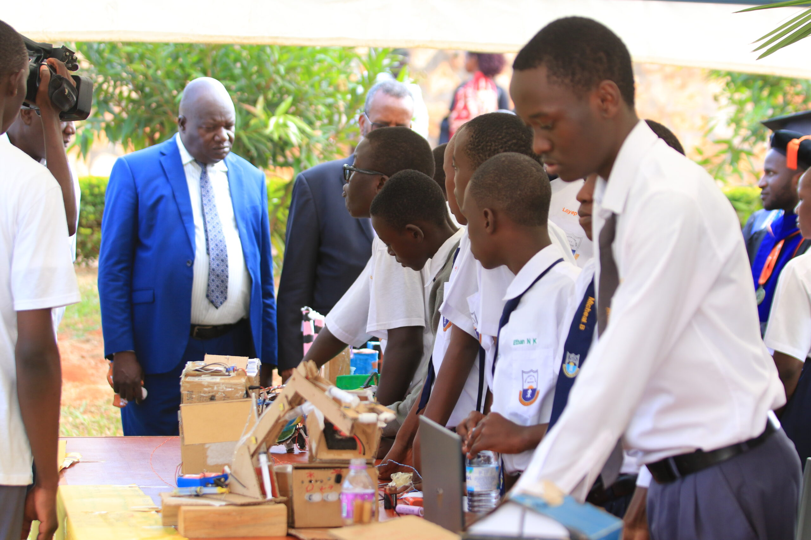
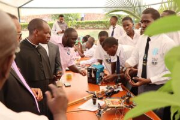

Areas of Operation
South Sudan
Extending the foundation's work beyond Uganda. In South Sudan we focus on the earliest barriers to STEM — access to teaching, equipment, and a reason to believe a technical career is possible.
- 0
- Students Reached
- 0
- Partner Schools
- 0
- Teachers Trained
- 0
- Community Programmes
Our approach
Building the foundations first
We start where the need is most basic and build upward — working with local schools and partners rather than around them.
Access
Getting learning materials and basic equipment into classrooms that have neither.
Teaching
Supporting teachers with practical STEM training they can apply immediately.
Mentorship
Connecting students to people who have walked the path they are considering.
Pathways
Opening routes to further study, regionally and internationally.

Programme
Teacher support and training
The fastest way to reach many students is through the person already standing in front of them. We work with teachers on practical STEM instruction, low-cost demonstrations, and shared materials.
- Practical training sessions for science teachers
- Teaching materials built for low-resource classrooms
- Ongoing contact rather than one-off visits

Programme
Access to equipment and materials
Practical science needs practical things. We supply kits and materials that let a classroom run real experiments, chosen for durability and for what can be repaired or replaced locally.
Get in touchLooking ahead
Growing this work responsibly
We would rather do a small amount well and grow from proof than announce more than we can sustain.
- Local partner schools and organisations
- A first scholarship intake
- Cross-border mentorship with Uganda cohorts
- Regional STEM exhibitions
Help us reach further
Whether as a donor, a school, or a partner organisation — get in touch about the work in South Sudan.